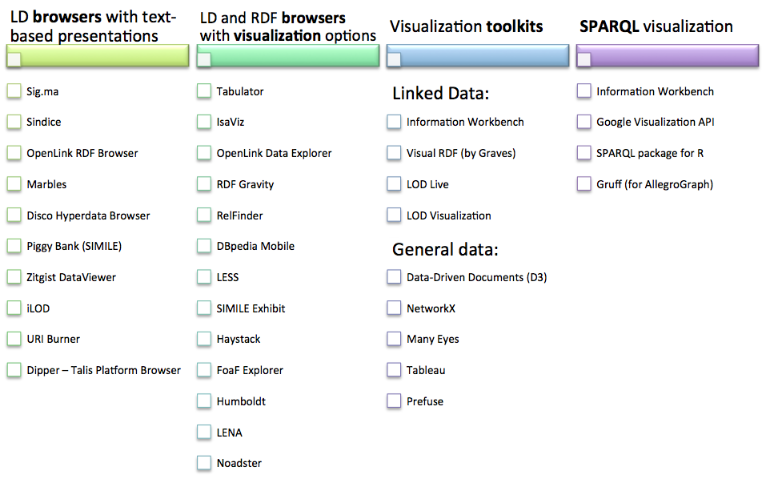

Linked Data visualization tools can be organised into four categories. These range from text-based Linked Data browsers to toolkits with extensive functionality for data transformation and graphical visualization.
1) Linked Data browsers with text-based representation
A text-based LD browser dereferences URIs to retrieve a resource description that is then presented to the user. Most LD browsers will present not only text descriptions but also other media such as images associated with the resource. Text based browsers will generally include hypertext links to connected resources. These may be part of the immediate description (i.e. triples that link from this to another resource) or backlinks (i.e. triples that link from other resources to this resource). See section 3.5.2 of chapter 3 for guidance on presenting resource descriptions.
2) Linked Data and RDF browsers with visualization options
Some Linked Data and RDF browsers make more extensive use of media associated with the resource and organise this media into more coherent or engaging presentations of the data. These browsers also offer greater use interaction. As well as links to connected resources they provide ways of querying and filtering the data. These types of browser can therefore be used to analyse as well as traverse the data.
3) Visualization toolkits
Visualization toolkits bring together a range of visualization techniques. They generally incorporate methods for transforming the raw data in order that it can be rendered by the visualization. Some visualization toolkits are specifically designed to consume Linked Data.
4) SPARQL visualization
Finally, SPARQL visualizations are tools that dynamically transform the output of SPARQL queries to produce visualizations. These tools can be used to support analysis of the dataset that is accessed by the SPARQL endpoint.
As summarised in the figure below, a number of current tools fall into these four categories. In the next section we will introduce Sig.ma and Sindice as examples of Linked Data browsers and then the Information Workbench will be introduced as an example of a visualization toolkit that can also visualize the results of SPARQL queries.

Figure 17: Types of Linked Data visualization tool.